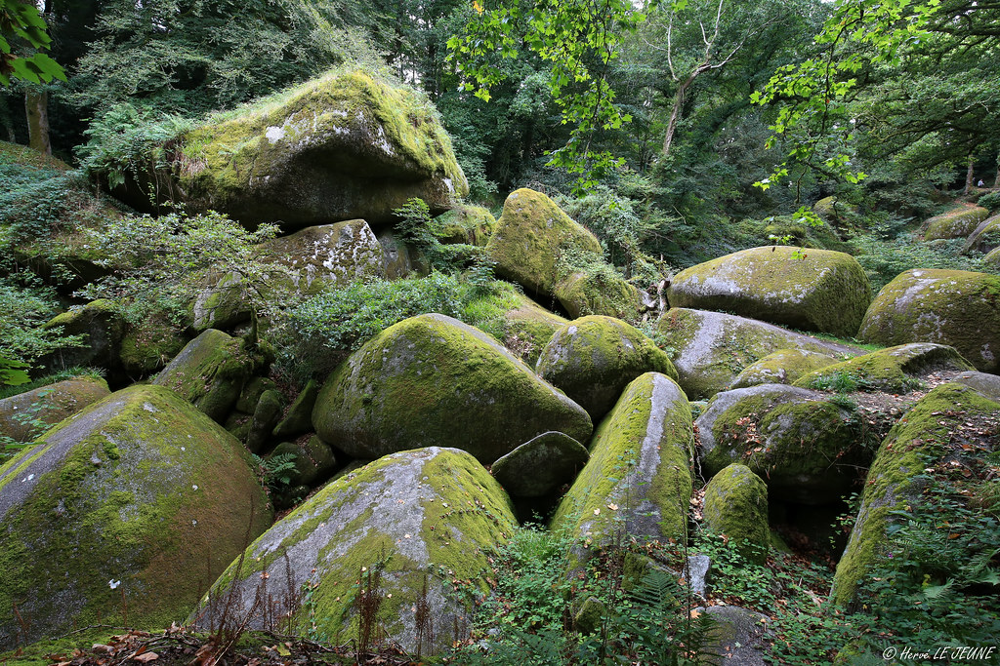

Lundi
La forêt qui raconte encore ses légendes
HuelgoatversBrennilis
À votre avis, combien de mètres de dénivelé positif aujourd'hui ?
On plonge directement dans les sous-bois denses du chaos de Huelgoat, entre blocs de granit géants et rivière souterraine. Le sentier est roulant, presque plat, ce qui laisse le temps de s'arrêter partout : au Moulin, dans la grotte du Diable, ou devant la Roche Tremblante, un bloc de cent trente sept tonnes qu'on peut faire vaciller à la seule force des bras. Plus loin, la grotte d'Artus et la mare aux Sangliers referment la partie la plus mystérieuse de la journée. La seconde moitié suit une ancienne voie ferrée devenue voie verte, un vrai bol d'air après les sous-bois, jusqu'au bord du grand réservoir de Saint-Michel.
- Le chaos de Huelgoat, avec le Moulin et la grotte du Diable
- La Roche Tremblante, un bloc de cent trente sept tonnes que l'on peut faire bouger
- La grotte d'Artus et la mare aux Sangliers
Grattez pour révéler la légende
On raconte que les blocs du chaos ont été jetés là par Gargantua lui-même, en chemin vers la mer. La grotte d'Artus, elle, tiendrait son nom d'un roi Arthur venu s'y reposer après une bataille, bien avant que la légende ne s'installe de l'autre côté de la Manche.
Arrivée à Brennilis, au bord du réservoir de Saint-Michel.